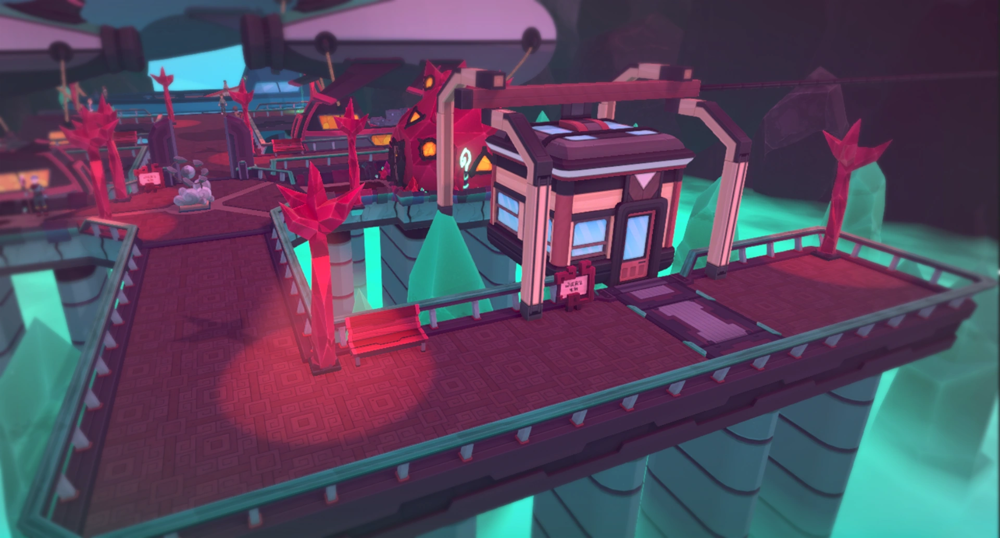

GAME TOWN
Quetzal
Description
Quetzal is a large mining and manufacturing city, and the only city on Tucma, one of the islands in MyTrickStEr. Residents of Quetzal are known as Quetzaleño's, but are also pejoratively called "mine-worms" by the bandits that live on Tucma's surface. The beautiful city of Quetzal is illuminated by various crystal lights. The city is built on a series of platforms and walkways that span a massive cavern underneath the surface of the island. In addition to acting as the city's lampposts, crystals also protrude from the ground, and are embedded in trees that decorate several pathways in the city.
Items
- 2x TemCard+ (In trashcan in Manki's house)
- 1x Growth Enhancer (In trashcan in bottom left house)
- 2x Enhancer Mango (In trashcan at bar of Jaguar Lounge)
- 2x Vigorous Loquat (In trashcan at far end of bar of Jaguar Lounge)
- Squeezer (Reward from Find Kemal quest)
- Energy Drink (Reward from Find Kemal quest)
- TC008: Awful Song (Reward from Find Kemal quest)
- Rock Shield (Reward from Find Kemal quest)
- Surfboard (Reward from Beached Narwhal quest)
Trivia
- A quetzal is a bird from Central America.
- Despite the exterior of the Quetzal Trading House being reworked with the release of Arbury, its appearance on maps has not changed, making it possible for players to seemingly stand inside the building's footprint on the minimap.